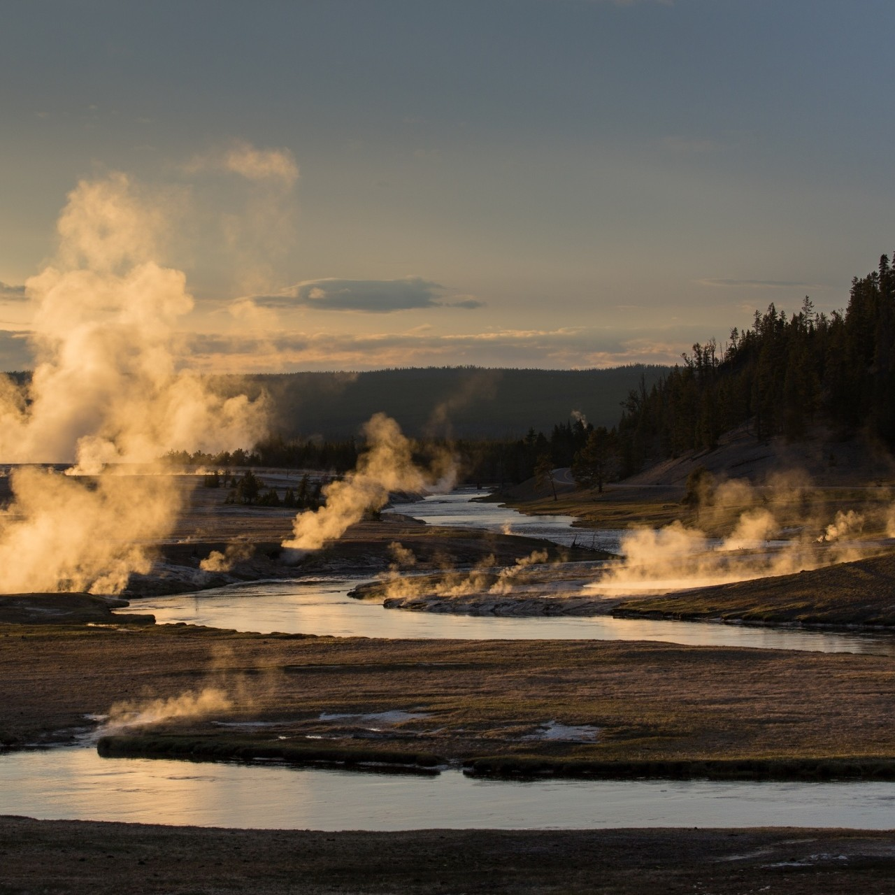

CFD for Environmental Analysis (FUTURE PROJECT)
August - December 2026
My upcoming senior thesis (MQP) involving appplications of computational fluid dynamics (CFD) in an environmental site analysis.
Learn more
I have been involved in a variety of environmental projects concerning policy, analysis, and modeling.
Learn more(Image Credit: Jean Beaufort)
I have participated in internships in MassDEP and DOE. I was not considered an employee of DOE. I also lead in-class discussions for my school's math classes as a Peer Learning Assistant.
Learn more(Image Credit: Vera Kratochvil)
August - December 2026
My upcoming senior thesis (MQP) involving appplications of computational fluid dynamics (CFD) in an environmental site analysis.
Learn more
June - August 2026
Under the Mickey Leland Energy Fellowship (MLEF) with DOE, I investigated low-producing natural gas well economics and environmental impacts over time.
(Image Source: National Energy Technology Lab)
Learn more
May - October 2025
I did data work on the GAP Energy Grant for clean energy and energy efficiency projects as well as the first grant for wastewater energy recovery technology in Massachusetts. This included a gamma log link regression model on projected carbon dioxide emissions per kWh of electricity consumed in Massachusetts.
(Image Credit: Petr Kratochvil)

Investigated the movement of electrons through a slurry electrode, which is an abnornal, non-Newtonian fluid. This delved into Strum Liouville theory.
(Image Source: Invinity Energy Systems)